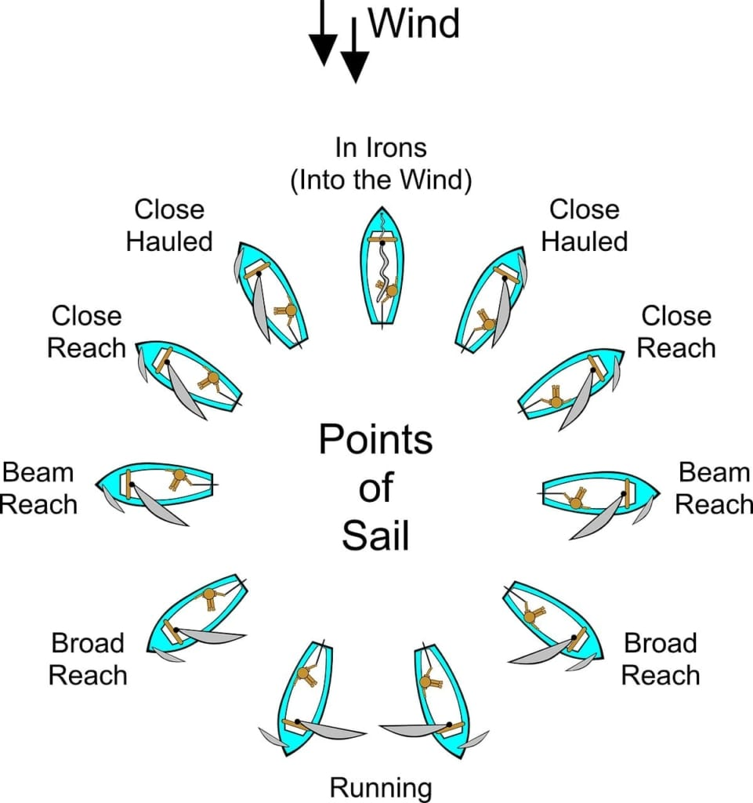

Before you can even begin setting up your sailboat, you must first know what type of sailboat you are using and the parts of a sailboat. Make sure at the very least you know the parts of the photo on the home page. While the picture does not show all the parts to a sailboat, it gives a good idea of the main ones to know moving forward. One other note is these steps will be relatively basic to keep this simple and also due to their being a variety of sailboats that are all setup slightly differently.
How to rig the sailboat
1. Start by sliding the mast into place. Then make sure to fasten it down using the available fittings.
2. Attach the boom to the mast so that it is securely fastened.
3. The mainsails front edge (luff) then needs to be attached to the mast by using the sail slides. Also attach the back corner (clew) of the mainsail to the boom using the clips or other fastenings.
4. Raise the mainsail by using the rope (halyard) to pull it secure.
5. Attach the mainsheet (rope that controls the boom) to the boom.
6. Lastly attach the rudder to the sailboat
A couple things to also note are that some smaller sailboats do not have a keel so they may have a removable (wooden) daggerboard that may need to be inserted in the middle slit of the sailboat. Also some larger sailboats have a jib sail that may need to be attached to the mast. This can be setup similarly to that of the mainsail.
What you need to know to go sailing
One of the things you need to do before you go sailing is to take boater's safety. It is important to know information like proper safety equipment, what boats have the right away, and various other safety measures. This will not be discussed further on this site but again it is very important to have the proper safety training before operating any boat.
Now once you have your sailboat rigged up properly and know the parts of a sailboat, the fun part can begin! The first aspect to pay attention to is knowing the direction that the wind is coming from (and also make sure to know what the weather conditions are). You also should know the following diagram which shows where your sail is at based on what direction to the wind you are turned.

You don't necessarily have to have this diagram memorized but knowing the general idea will help when it comes to actually getting out there and sailing. It is also important to note that when going downwind and you have to flip the sail this is called gybing but be careful! It can be dangerous to do because of how fast the boom moves. Also in order to go upwind you have to tack which is basically a zig-zag pattern back and forth across the wind.
While sailing you want to make sure to balance the sailboat because leaning too far one way can cause the boat to tip. Also know that when your sail seems to have slack in it you will want to trim (pull) it in more. The more you trim it in the faster you can go but the more you will have to balance the boat to avoid tipping over.
This information can seem like a lot and while it is, the biggest way to really learn is to go out in a sailboat and practice just like you would a sport. Make sure though that when you go out you do it safely, have proper safety equipment, let others know when you go out, stay close to shore when practicing, and start small.
For those curious about the physics of sailing
Understanding the physics behind sailing is not required to sail a sailboat, however it is interesting to know!
The physics behind sailing can be described by Bernoulli's Principle. This principle is the idea that as the wind blows on the sail it creates a higher pressure on one side of the sail leading to lower pressure on the other side. Due to the pressure difference the system tries to get back to a state of equilibrium which in this case is the high pressure air trying to move towards the low pressure side of the sail. Once the sail is able to “capture” the wind it then is able to travel in the direction of the resultant force. The resultant force is the combination of all the forces acting on the sail.